4月
すべては去年の反省から
最初の活動は4月まで遡る。ここでは去年の各企画の反省をした。また、今年の企画で勝ちに行くことも決めた。
当時出た案
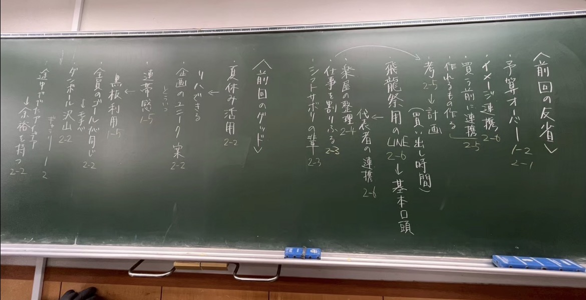
次に今年の飛龍祭のテーマ「wa」が、定まり、企画を考える段階に入った。
2026 飛龍祭 / 3年1組
ここには3年1組の飛龍祭企画「クマと私とホットケーキ」ができるまでの過程を書こうと思います。
途中、黒板などの写真が出てくるので、時間があれば見てくれると幸いです。
最初の活動は4月まで遡る。ここでは去年の各企画の反省をした。また、今年の企画で勝ちに行くことも決めた。

次に今年の飛龍祭のテーマ「wa」が、定まり、企画を考える段階に入った。
最初の企画決めの話し合い。その後絞っていき、残った案を深めていった。
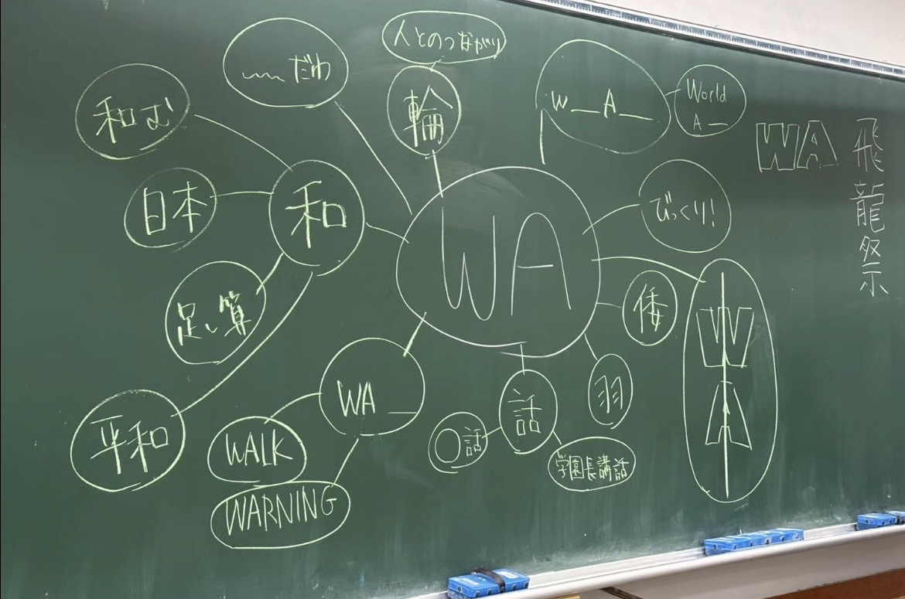
鏡文字というのは「wa」が線対称だから。当時は和、倭など「わ」関連が多かった。
しかし、その後出た案は、実現性が低い、他と被りそう（童話など）と、どんどん却下され行き詰まってしまった。
そこで、もう一度「wa」を含む単語を書き出していった。
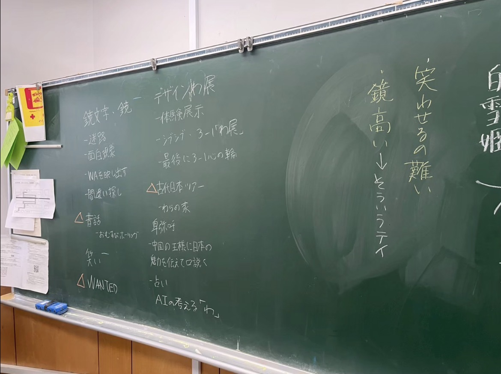
表に入り切らず、裏の黒板にも書き出した
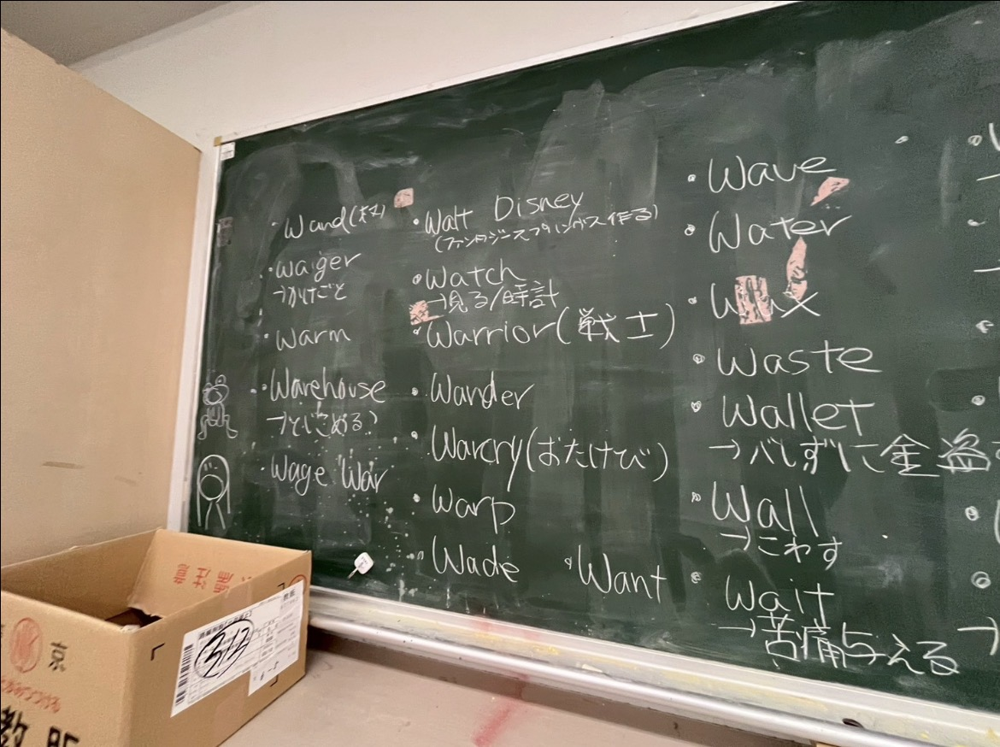
何個かに絞ったところ、夢の中から脱出が当時ほぼ確定。あと何かを組み合わせてやるつもりだった。
その後話し合いの結果「watch」×「wake up」となり、深めていく段階に入った。
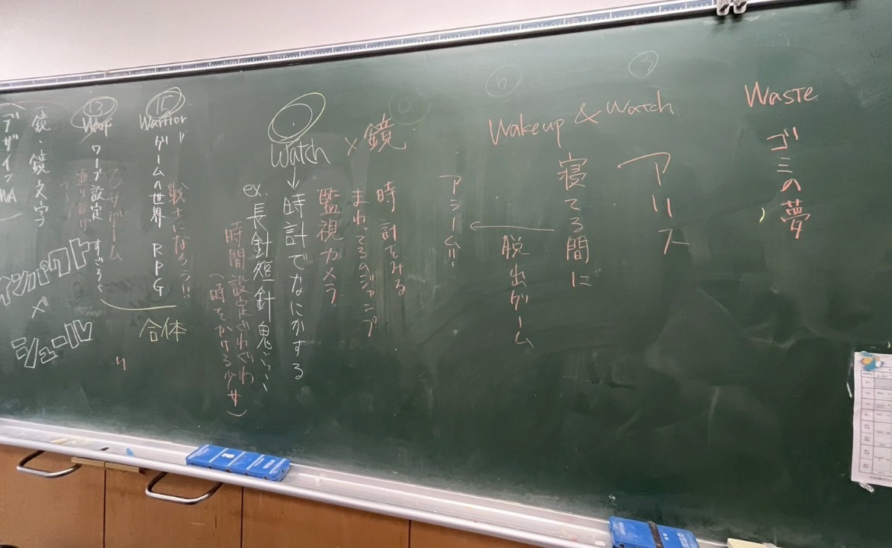
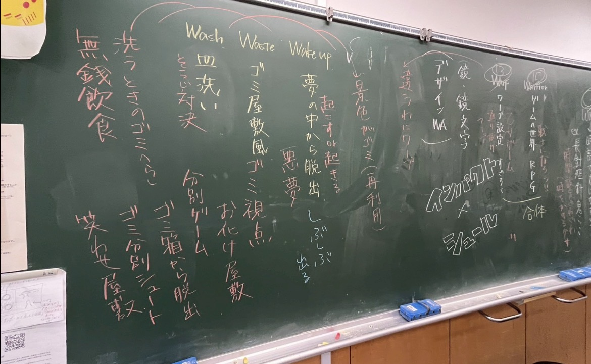
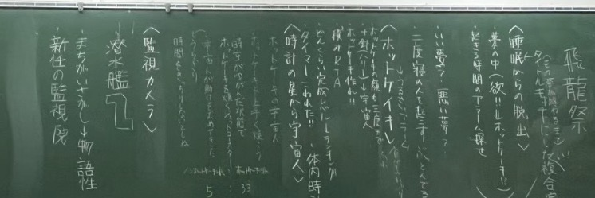
とけい（watch）だから「ホッとけいキ」というダジャレからだった。
しかし、こういうネタみたいなやつがテーマに選ばれることが飛龍祭では多い。
ホットケーキと決まったものの、そこからどうするかは何もわからないので皆で考えた。
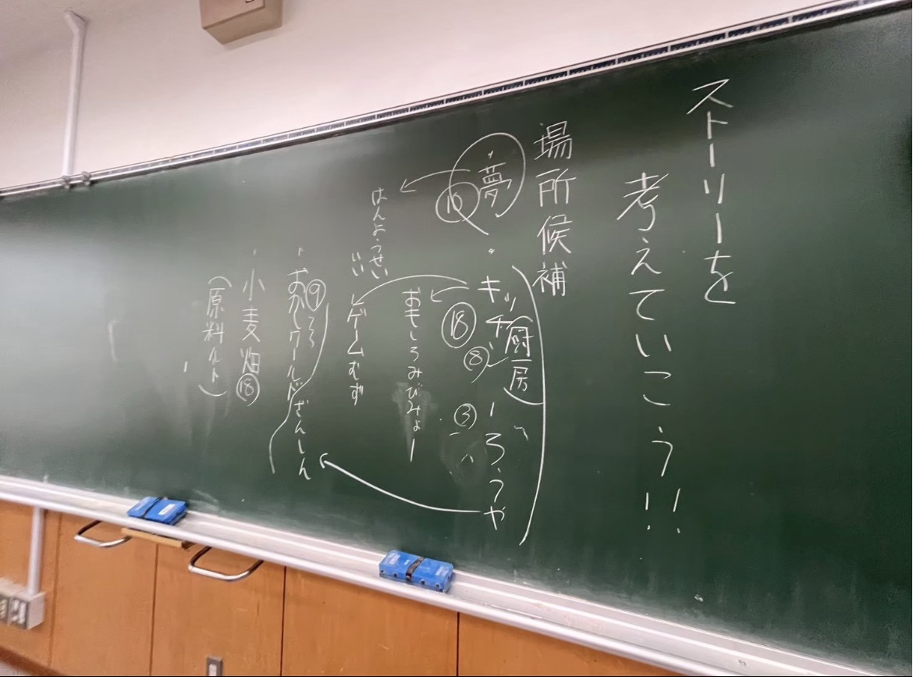
原料を集めて作る的な感じだった。
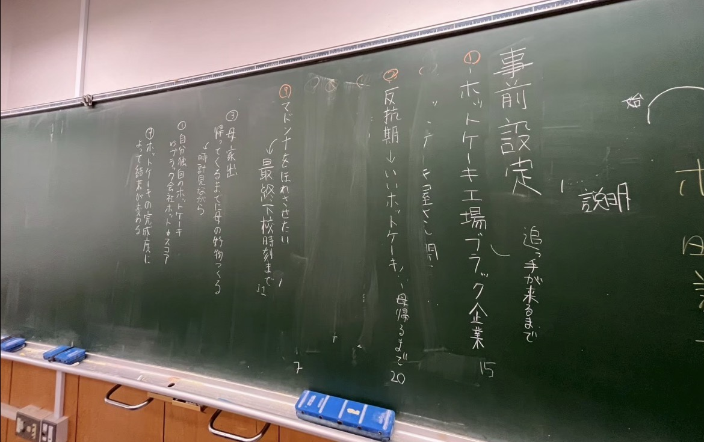
当時有力だったのは一番右側のホットケーキブラック工場を訴えるもの。今とはだいぶ異なっている。
しかし、なかなかストーリーは決まらず行き詰まっていた。
そんな中ある生徒が、ホットケーキが出てくる童話があると言った。それがチラシの裏にある「三匹のくま」だった。
ここで停滞していた話し合いが一気に進んだ。
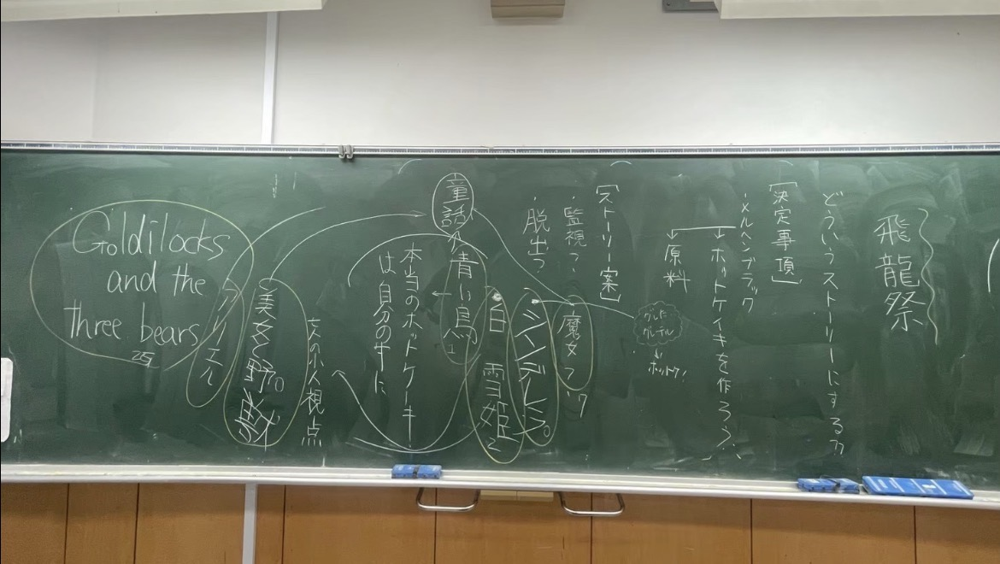
おそらく最後の全体での話し合い。この頃には現在と内容がかなり近くなってきた。
その後班決めをし、いよいよ本格的な飛龍祭準備に入った。
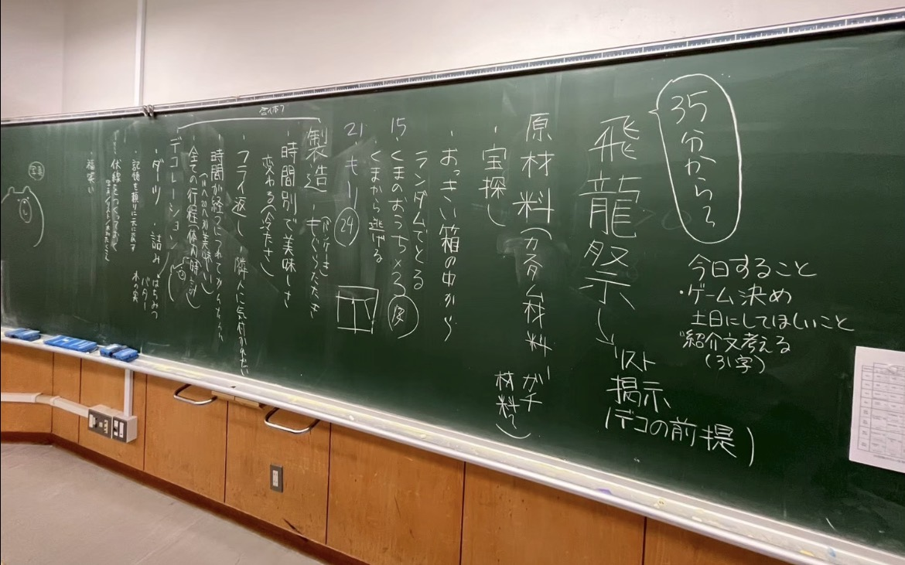
夏休みに入ると、まずダンボール集めをした。
その後は各班が学校に集まり、話し合い、制作などを進めた。例えば壁の原型やホットケーキはこのころ作られた。
夏休みの始まったころ、ある2人がこんな会話をしていた。
そこで、私（これを書いている人）はあるアイデアを話した。それがこれ、制作日記である。
考えればこのクラスは、wa → watch → 時計 → ホットケーキ → 童話 → wa（話）というすごい過程で企画にたどり着いた。
wake upやwatchはいつの間にか消え、奇しくも最初真っ先に却下された童話のwaでいくことになった。
しかし、watch → とけい → ホットケーキという流れはやはり大事である。なんとか組み込みたい。
とにかく、この制作日記を作ることになった。
9月になると毎日のように話し合いが行われ、制作もどんどん進めていった。
教室は段ボールだらけで、授業ができるようにするのも一苦労だった。
そして準備日である。皆作業に取り掛かった。
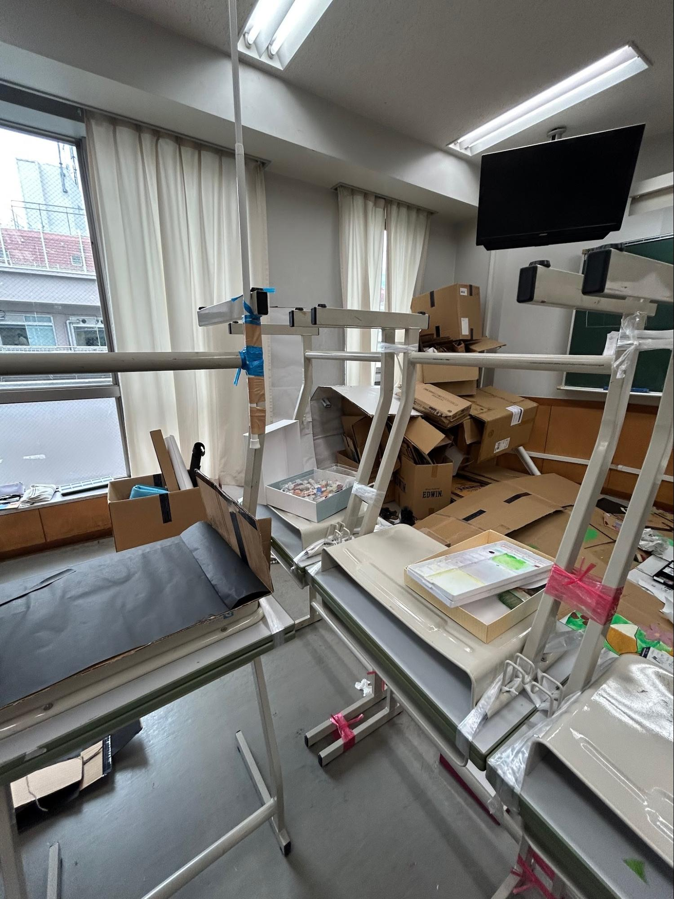
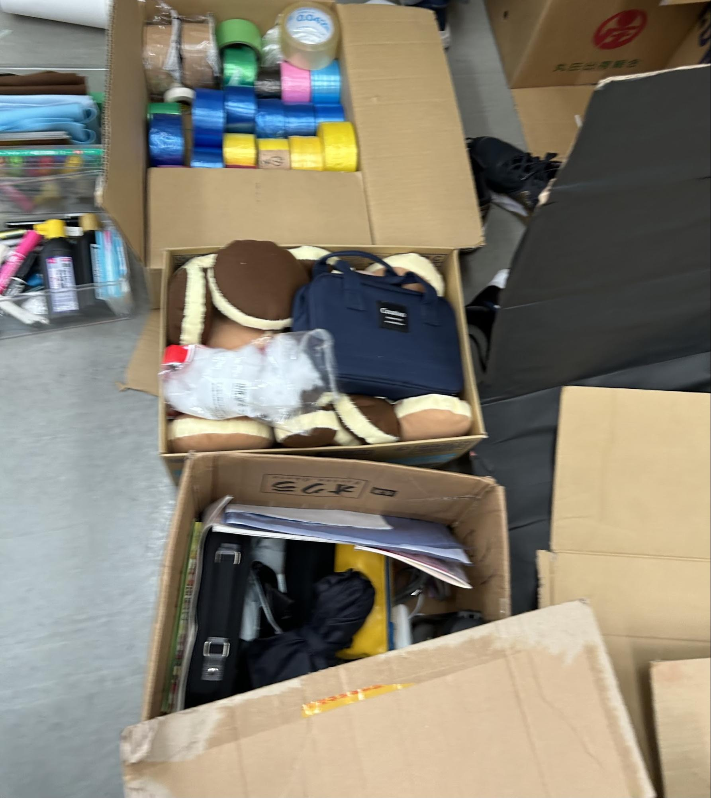
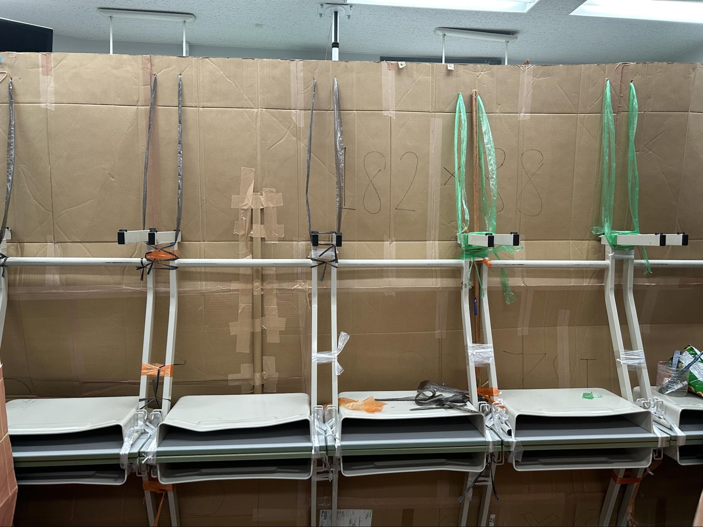
やることは山ほどあった。
机を組む、色々印刷する、看板作る、他の班と話し合って内容確認する、ストーリーの矛盾の解消、他の班の手伝い（壁の色塗り、ホットケーキ作りなど、ロッカーコンの装飾）、壁立て。
机を組むのを含めると、この壁を作るのにすごい時間をかけている。約15時間。
三年一組は結構早く進んでいたのに2日目が終わっても作業は終わらなかった。
最後に、この堅苦しい感じに企画の雰囲気が合わないので混乱するかもしれない。
しかし、企画自体は全く堅苦しくはありません。これはあくまで飛龍祭の裏側を泥臭くありのままに書いたつもりです。
この企画は色々あったが結構いいものができたと思っています。
教室に入ったら現実のことは一旦忘れて楽しんでください。
面白いと思ったならぜひ投票をよろしくお願いします。
以上、3年1組の飛龍祭制作日記でした。